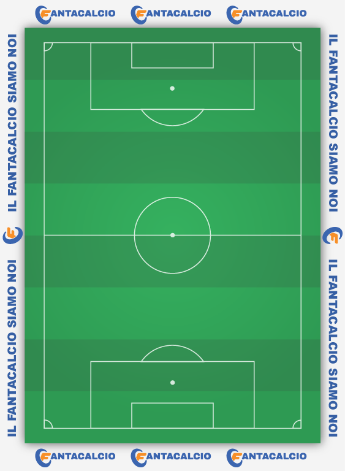

Miglior formazione per la giornata 10

Skorupski - 5.5
|Kristensen-5||N'dicka-5.5||Lazzari-5.5||Faraoni-6|
|Boloca-10||Makoumbou-9.5||De Ketelaere-6|
|Retegui-6.5||Martinez L.-5.5||Krstovic-5.5|
Skorupski - P - 5.5 (6.5)
Faraoni - D - 6 (6)
Lazzari - D - 5.5 (6)
N'dicka - D - 5.5 (6)
Birindelli - D - 0 (0)
Kristensen - D - 5 (5)
Zaccagni - C - 5 (5.5)
Aouar - C - 0 (0)
Weah - C - 5.5 (5.5)
De Ketelaere - C - 6 (6)
Boloca - C - 10 (7)
Makoumbou - C - 9.5 (6.5)
Martinez L. - A - 5.5 (5.5)
Retegui - A - 6.5 (6.5)
Krstovic - A - 5.5 (5.5)
Ravaglia F. - N - 0 (0)
Christensen O. - N - 0 (0)
Hysaj - N - 0 (0)
Beukema - N - 0 (0)
Kayode - N - 0 (0)
Kastanos - N - 0 (0)
Radonjic - N - 0 (0)
Lapadula - N - 0 (0)
Brekalo - N - 0 (0)
Davis K. - N - 0 (0)
Bonus imbattibilita: 0
Bonus difesa: 1
Punteggio: 71.5
Miglior formazione per la giornata 5
Skorupski - 6
|Kristensen-6.5||Beukema-6.5||Birindelli-6||N'dicka-5.5|
|De Ketelaere-8||Zaccagni-6.5||Kastanos-6||Boloca-6|
|Krstovic-6.5||Martinez L.-6|
Skorupski - P - 6 (6.5)
Hysaj - D - 5 (5)
Faraoni - D - 5 (5.5)
N'dicka - D - 5.5 (5.5)
Birindelli - D - 6 (6)
Dodo' - D - 0 (0)
Beukema - D - 6.5 (6.5)
Kristensen - D - 6.5 (6)
Zaccagni - C - 6.5 (6.5)
Kastanos - C - 6 (6)
Weah - C - 5.5 (5.5)
Radonjic - C - 5 (5)
De Ketelaere - C - 8 (7)
Boloca - C - 6 (6.5)
Makoumbou - C - 5.5 (5.5)
Martinez L. - A - 6 (6)
Brekalo - A - 5.5 (5.5)
Retegui - A - 5.5 (5.5)
Krstovic - A - 6.5 (6.5)
Ravaglia F. - N - 0 (0)
Christensen O. - N - 0 (0)
Lazzari - N - 0 (0)
Aouar - N - 0 (0)
Lapadula - N - 0 (0)
Davis K. - N - 0 (0)
Bonus imbattibilita: 1
Bonus difesa: 1
Punteggio: 71.5
Miglior formazione per la giornata 6
Skorupski - 6.5
|Beukema-6.5||Birindelli-5.5||Lazzari-7.5||Faraoni-5.5|
|Zaccagni-10||Boloca-7||Kastanos-6||Radonjic-5.5|
|Retegui-9.5||Martinez L.-5.5|
Skorupski - P - 6.5 (6.5)
Hysaj - D - 0 (0)
Faraoni - D - 5.5 (5.5)
Lazzari - D - 7.5 (6.5)
N'dicka - D - 4.5 (4.5)
Birindelli - D - 5.5 (6)
Beukema - D - 6.5 (6.5)
Kristensen - D - 4.5 (4.5)
Zaccagni - C - 10 (7)
Kastanos - C - 6 (6)
Aouar - C - 5 (5.5)
Weah - C - 0 (0)
Radonjic - C - 5.5 (5.5)
De Ketelaere - C - 5.5 (5.5)
Boloca - C - 7 (7)
Makoumbou - C - 5.5 (5.5)
Martinez L. - A - 5.5 (5.5)
Retegui - A - 9.5 (7)
Krstovic - A - 5 (5.5)
Ravaglia F. - N - 0 (0)
Christensen O. - N - 0 (0)
Dodo' - N - 0 (0)
Lapadula - N - 0 (0)
Brekalo - N - 0 (0)
Davis K. - N - 0 (0)
Bonus imbattibilita: 1
Bonus difesa: 1
Punteggio: 77
Miglior formazione per la giornata 7
Skorupski - 7
|Kristensen-6||Beukema-6.5||Birindelli-5.5||Faraoni-6|
|De Ketelaere-6.5||Zaccagni-6||Boloca-6|
|Martinez L.-21||Retegui-7||Brekalo-6|
Skorupski - P - 7 (7)
Hysaj - D - 5.5 (5.5)
Faraoni - D - 6 (6)
N'dicka - D - 5.5 (5.5)
Birindelli - D - 5.5 (5.5)
Beukema - D - 6.5 (6.5)
Kristensen - D - 6 (6)
Zaccagni - C - 6 (6)
Kastanos - C - 5.5 (5.5)
Aouar - C - 0 (0)
Weah - C - 0 (0)
Radonjic - C - 5 (5)
De Ketelaere - C - 6.5 (6.5)
Boloca - C - 6 (6)
Makoumbou - C - 5.5 (5.5)
Martinez L. - A - 21 (9)
Brekalo - A - 6 (6)
Retegui - A - 7 (6)
Krstovic - A - 5 (5)
Ravaglia F. - N - 0 (0)
Christensen O. - N - 0 (0)
Lazzari - N - 0 (0)
Dodo' - N - 0 (0)
Lapadula - N - 0 (0)
Davis K. - N - 0 (0)
Bonus imbattibilita: 1
Bonus difesa: 1
Punteggio: 85.5
Miglior formazione per la giornata 8
Skorupski - 4
|Kristensen-6||Beukema-6||Birindelli-6||N'dicka-6.5|
|Aouar-9.5||Zaccagni-6.5||Weah-6|
|Brekalo-10||Krstovic-9.5||Martinez L.-9|
Skorupski - P - 4 (6)
Hysaj - D - 5.5 (5.5)
Faraoni - D - 5.5 (5.5)
N'dicka - D - 6.5 (6.5)
Birindelli - D - 6 (6)
Beukema - D - 6 (6.5)
Kristensen - D - 6 (6)
Zaccagni - C - 6.5 (6.5)
Kastanos - C - 5 (5)
Aouar - C - 9.5 (7)
Weah - C - 6 (6)
De Ketelaere - C - 4 (6)
Boloca - C - 5 (5.5)
Makoumbou - C - 5 (5)
Martinez L. - A - 9 (6.5)
Brekalo - A - 10 (7)
Krstovic - A - 9.5 (7)
Ravaglia F. - N - 0 (0)
Christensen O. - N - 0 (0)
Lazzari - N - 0 (0)
Dodo' - N - 0 (0)
Radonjic - N - 0 (0)
Lapadula - N - 0 (0)
Davis K. - N - 0 (0)
Retegui - N - 0 (0)
Bonus imbattibilita: 0
Bonus difesa: 1
Punteggio: 80
Miglior formazione per la giornata 9
Skorupski - 5
|Kristensen-6||Beukema-5.5||Birindelli-6.5||N'dicka-6||Lazzari-6|
|Weah-7||Zaccagni-6.5||Aouar-6||De Ketelaere-5.5|
|Martinez L.-10|
Skorupski - P - 5 (6)
Faraoni - D - 4.5 (5)
Lazzari - D - 6 (6)
N'dicka - D - 6 (6)
Birindelli - D - 6.5 (6.5)
Beukema - D - 5.5 (5.5)
Kristensen - D - 6 (6)
Kayode - D - 5 (5)
Zaccagni - C - 6.5 (6.5)
Kastanos - C - 4.5 (5)
Aouar - C - 6 (6)
Weah - C - 7 (6.5)
De Ketelaere - C - 5.5 (5.5)
Boloca - C - 5 (5)
Makoumbou - C - 5.5 (6)
Martinez L. - A - 10 (7)
Brekalo - A - 5.5 (5.5)
Krstovic - A - 5.5 (5.5)
Ravaglia F. - N - 0 (0)
Christensen O. - N - 0 (0)
Hysaj - N - 0 (0)
Radonjic - N - 0 (0)
Lapadula - N - 0 (0)
Davis K. - N - 0 (0)
Retegui - N - 0 (0)
Bonus imbattibilita: 0
Bonus difesa: 1
Punteggio: 71
TOTALE PUNTI MASSIMO: 456.5